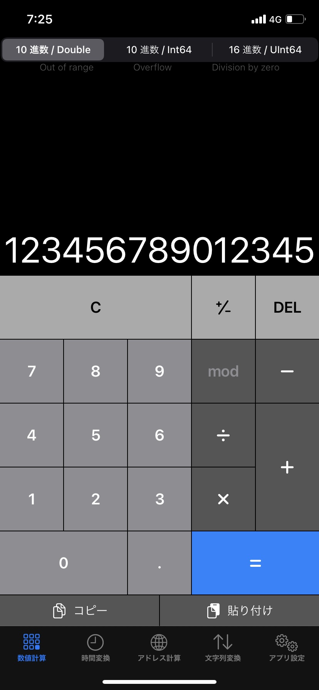
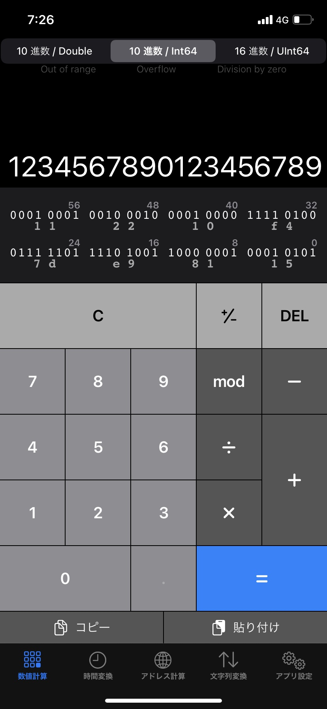
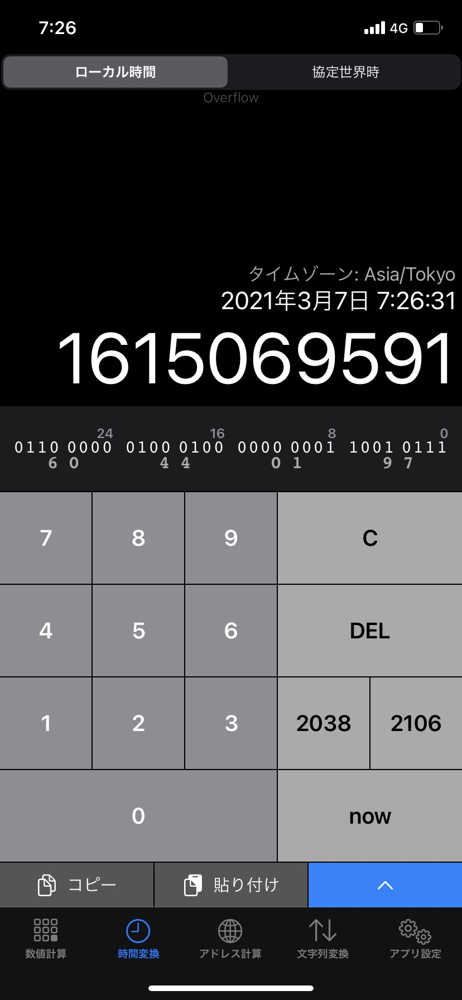
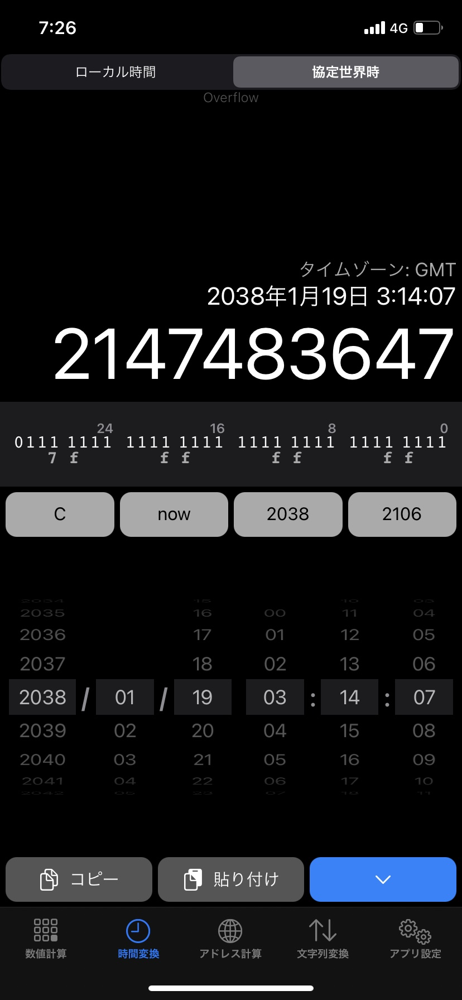
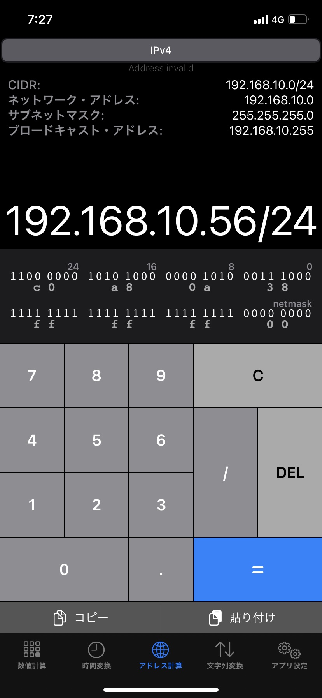
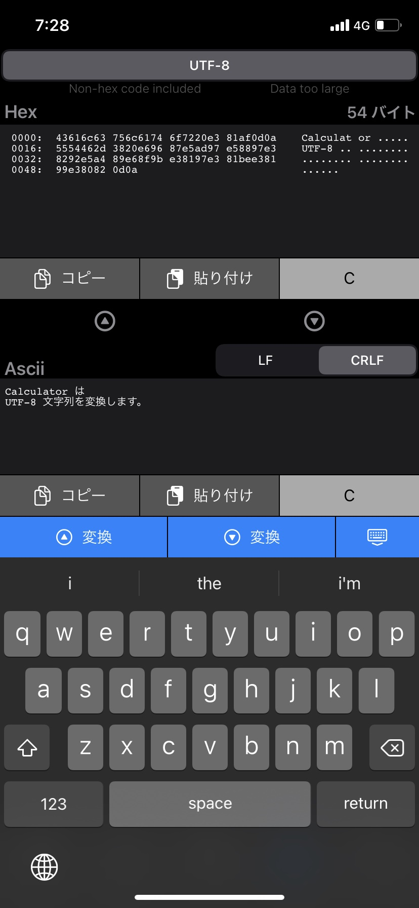
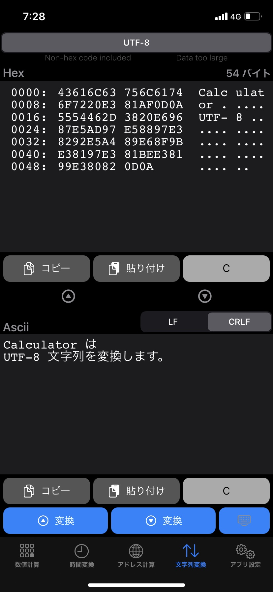
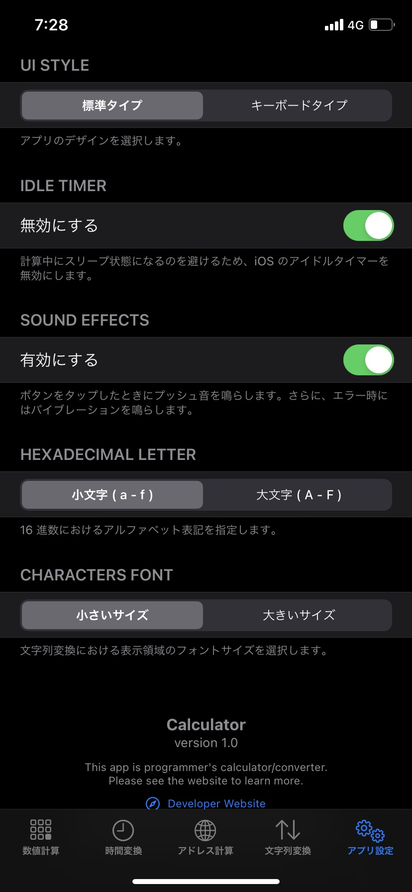

Calculator
IoT 技術者のみなさん、このアプリを規定の電卓に設定しましょう！
（Apple 社で審査中）









説明を隠す
Calculator は、プログラマーやシステムエンジニアなどの IoT 技術者のために開発された計算機アプリです。
IoT で扱うあらゆるデータはバイナリ形式（0 と 1 の 2 進数）として表現されます。
このアプリは、代表的なデータである「数値」「UNIX 時間」「IP アドレス」「文字列」を計算し、ビット列や 16 進ダンプで表示します。
-
数値計算（Numeric）
数値の型を「10 進数 浮動小数点 Double」「10 進数 符号付き Int」「16 進数 符号無し Int」から選択します。
Double では、最大 15 桁（内、小数は第 10 位まで）まで扱うことができます。
Int では、64 bit の範囲内の数値を扱うことができ、四則演算に加え、剰余演算および各種ビット演算が可能です。
時間変換（UNIX Time）
UNIX エポックからの経過秒数と日時（西暦）を相互に変換します。
日時は、ローカル時間と協定世界時のいずれかで表示します。
現在時刻、2038/2106 年問題の境界値、および カレンダー指定による入力も可能です。
アドレス計算（IP Address）
IPv4 の CIDR 形式からネットワークアドレス、サブネットマスク、および ブロードキャストアドレスを算出します。
IPv6 アドレス形式は、次期バージョンで対応予定です。
文字列変換（Characters）
入力した文字列データ（最大 64 KB）をバイナリに変換し、16 進ダンプ表示します。
文字列データにおけるマルチバイトコードのエンコーディングは UTF-8 です（その他の文字コードは未対応）。
また、バイナリデータをエディタで編集可能であり、文字列に逆変換することも可能です。
数値計算の留意事項
- 演算子の優先順位はすべて同じであり、常に先頭から評価します（例：3 + 2 * 2 = 10）。
- オーバーフロー演算（オーバーフロー/アンダーフロー部分を切り捨てる演算）は行わず、結果がオーバーフローとなる演算はエラー（Overflow）としてキャンセルされます。
- 0 による除算および剰余演算はエラー（Division by zero）としてキャンセルされます。
- Double 型の計算において指数表示（例：1.234e+16）には対応していません。そのため、64 bit 精度の有効桁数である 15 桁の範囲内で計算を行います（参考: IEEE 754）。なお、小数部の有効桁数は第 10 位です。
- Double 型の計算において、結果が 999999999999999 を超える（または、-999999999999999 を下回る）演算はエラー（Out of range）としてキャンセルされます。
- Double 型の計算において、結果が 0.0000000001 より小さな正数（または、-0.0000000001 より大きな負数）となる演算はエラーとはせず、結果を 0 とします。


Apple、Appleのロゴは、米国およびその他の国で登録されたApple Inc.の商標です。